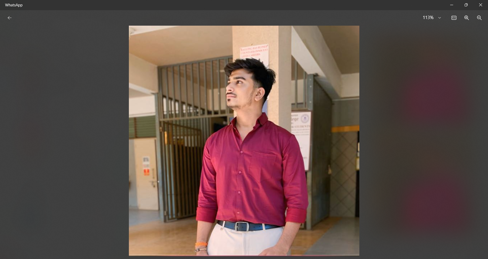

Hello, I'm
SURAJ G. SINGH
Final Year BScIT Student | Tech & Operations Manager
Download Resume Get In TouchAbout Me
I am a **Final Year BScIT student** with a unique blend of technical knowledge and three years of hands-on management experience in the medical sector. My background includes successfully handling end-to-end **purchase management**, overseeing **inventory software operations**, and ensuring efficient cash flow.
I am passionate about leveraging my **IT skills (HTML, CSS, JavaScript)** to build efficient systems and transition my proven operational expertise into the technology domain. I bring strong analytical skills, meticulous attention to detail, and a results-driven attitude.
Personal Details
- Full Name: Suraj Gaurishankar Singh
- D.O.B: 22 / 12 / 2003
- Email:surajsingh7039676@gmail.com
- Phone: +91 7039676294
Education & Academics
BScIT (Bachelor of Science in Information Technology)
Bhavance College Andheri(W) | *Expected Completion: 2026*
Focused on web development, database management, and networking principles. Currently in the final year.
Higher Secondary School (12th Grade - Science)
School Name | Completion Year
Percentage: 84%
Secondary School (10th Grade)
School Name | Completion Year
Percentage: 80%
Professional Experience
Purchase Manager & Software Handler (2 Years)
Medical Retail Store | City, State
- **Managed end-to-end purchasing** for medical supplies and pharmaceuticals, optimizing inventory levels by 20%.
- **Handled and maintained proprietary medical inventory/POS software**, including system troubleshooting and staff training.
- Ensured data accuracy and generated crucial business reports for stock analysis.
Cashier (1 Year)
Medical Retail Store | City, State
- Managed daily cash transactions and billing with zero discrepancies.
- Provided excellent customer service and handled sensitive data securely.
Core Skills
Web Technology
HTML5, CSS3, JavaScript (Foundational), VS Code.
Software Management
POS/Inventory System Handling, Troubleshooting, Data Entry, Reporting.
Purchase & Inventory
Vendor Management, Price Negotiation, Stock Optimization, Supply Chain.
Business Operations
Cash Management, Billing, Customer Relations, Team Coordination.
Contact Me
I am actively looking for opportunities where I can combine my technical knowledge with my management experience.